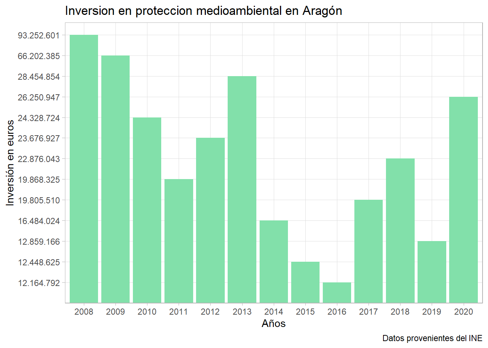

Introducción
Mi trabajo se centra en analizar las inversiones que se han realizado para la protección medio ambiental en nuestro país durante diferentes periodos. Proteger y cuidar el medio ambiente es vital, de esta forma se asegura la supervivencia de la especie humana. También la evolución de restos de seres vivos y por supuesto se permite que haya equilibrio ecocológio. Por todo ello, que se realicen inversiones destinadas a proteger nuestro medio ambiente es muy importante e interesante. Es un tema del cual todos deberiamos informarnos más.
Para poder saber más sobre estas inversiones he planteado una serie de preguntas bastante interesantes y diferentes que nos ayudaran a conocer un poco mas dichas inversiones, donde, cuando y como son realizadas.
Datos
Para la realización del trabajo ha sido necesaria la obtención de información procedente del INE.
Para poder utilizar estos datos los he modificado y adaptado antes de emplearlos.
Protección medioambiental en Aragón.
¿ Como afectó el Covid-19 a la inversión en protección medio ambiental en Aragón? ¿Se invierte poco?
Para poder contestar a estas preguntas observamos los años anteriores a la pandemia para ver cuanto era el gasto y si era apropiado. Finalmente lo comparamos con la inversión en 2020.

Los años del 2008 al 2013 con excepción del 2011 fueron los años donde más se invirtió en cuidar y proteger el medio ambiente en Aragón. El año 2016 sufrió una gran caída de la inversión llegando unicamente a invertir 12.164.792 euros. La pandemia favoreció a dicho gasto ya que la inversión aumento respecto a los años anteriores llegando a ser de 26.250.947 euros. Esto se debió a que en la pandemia nos dimos cuenta del daño que haciamos al medio ambiente y a la naturaleza, tras salir del confinamiento la naturaleza habia ‘dejado de sufrir’ y ahí comenzó a importar más el cuidado de esta.
El Gobierno de Aragón plantea ayudas y subvenciones al medio ambiente, con el objetivo de promover el buen comportamiento con la naturaleza.
Gestión de los residuos
Ya que el tema de gestión de los residuos es un tema que nos enseñan desde pequeños y ponemos en practica en casa, en el colegio… Me ha parecido interesante plantearnos:
La evolución de la inversión en gestión de residuos a nivel nacional durante el periodo 2015-2020
Podemos dar la definición de gestión de residuos como el proceso en el que intervienen diferentes actividades, todas necesarias, para poner solución a todos los residuos generados. Son 3 las principales fases de la gestión de residuos:
Recuperar y recoger los residuos: para ello, se usan contenedores en los que se deben depositar los residuos y en función del país y su sistema de gestión, se usan más o menos contenedores para clasificarlos y los colores pueden variar. Por ejemplo, hay países en los que existen contenedores para el plástico, para el papel, para residuos orgánicos, para el vidrio, entre otros. Trasportar los residuos: en esta fase se llevan en camiones los residuos a las plantas de clasificación o tratamiento. Tratamiento de residuos: en esta última fase de la gestión, los residuos sufren diferentes tratamientos dependiendo de su origen usando diferentes técnicas.
En el periodo 2015-2020 el año 2020 fué en el que más dinero se invirtio, en total 72.979.401 euros a nivel nacional. Y como podemos observar el año en el que más baja fue la inversió fué el 2017 con 34.287.953 euros.
En los ultimos años podemos observar como cada vez la inversion en gestionar los residuos aumenta, esta actividad es clave para el cuidado del medio ambiente. Son muchas las normas y leyes que se establecen para hacer una correcta gestión de residuos, estas existen a diferentes niveles.
Tabla resumen
Para poder tener la información junta y de forma más visual he creado la siguiente tabla. He seleccionado los ambitos que se centran en la ‘protección’ ambiental en los últimos cuatro años, para cada Comunidad Autonoma.
Cuestión final
Intente resolver la siguiente pregunta sin mirar la solución en la tabla!
¿Qué Comunidad Autónoma ha invertido más en protección medio ambiental en 2020?
| Comunidad Autonoma con mas gasto en proteccion ambiental en 2020 | |||
| Comunidad Autonoma | Año | Inversion en euros | |
|---|---|---|---|
| 04 Balears, Illes | 2020 | 961.137 | ![]() |
¿Sabías la respuesta? La Comunidad Autonoma que más invirtió en proteger el medio ambiente en el año 2020 fueron Las Islas Baleares con una inversión total de 961.137 euros.
Aunque la pandemia de la COVID-19 redujo la actividad humana, ello no supuso un cambio significativo en el mar Balear. Los delfines se acercaron a la costa gracias a la ausencia de ruido, la reducción de las molestias mejoró la transparencia del agua, permitiendo que las algas crecieran en nuevos lugares, y las aves marinas anidaron en nuevas zonas. Pero estas pequeñas mejoras han sido anecdóticas y de corta duración. Las investigaciones muestran que las presiones sobre el mar Balear y su bello y diverso entorno marino siguen siendo altas y que deberemos seguir trabajando para conseguir mejoras duraderas.
Afortunadamente tras la pandemia se pudo observar la importancia de cuidar en medio ambiente, el cuidado en las Islas Baleares aumentó con gran cantidad de ayudas e inversiones.
Conclusión
A modo de conclusión y bajo mi punto de vista las inversiones en la naturaleza son imprescindibles para garantizar la salud ambiental y humana. A pesar de que la naturaleza es la auténtica base del desarrollo y la actividad económica del planeta su vital importancia no está correctamente representada en el mercado financiero ni en los análisis económicos. Nunca es suficiente la inversión en la protección del medio ambiente y menos tras el calentamiento global en el que vivimos. Esto nos perjudica a todos por igual.
En el ambito económico si inviertes en empresas que implementan soluciones a la actual crisis de sostenibilidad que sufre el planeta, obtendrás triple recompensa: mayor rentabilidad a largo plazo, menor riesgo y contribuirás a generar impacto positivo para toda la sociedad y el medio ambiente.